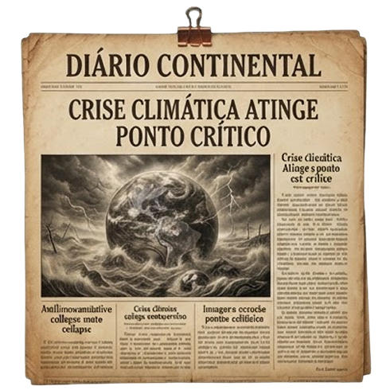

REGISTRO 01 / 05
DOCUMENTO PRESERVADO

BOLETIM CLIMÁTICO · ÚLTIMOS ALERTAS
Crise climática atinge ponto crítico
O planeta já não conseguia esconder os sinais. O que antes parecia distante passou a fazer parte do cotidiano.
O que ficou registrado
Temperaturas extremas, eventos climáticos mais intensos e alertas sucessivos marcaram o início de uma crise que governos e comunidades já não podiam tratar como uma ameaça futura.
ConsequênciaA emergência climática deixa de ser previsão e passa a orientar decisões de sobrevivência.